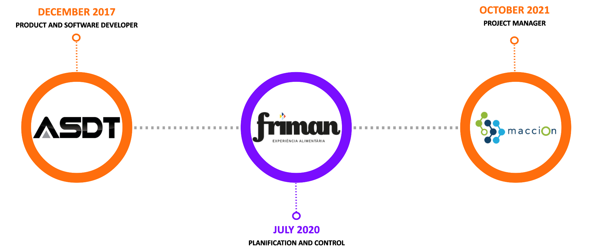

ASDT systems europe S.L.
 ASDT Systems és una empresa tecnològica amb seu a Sallent (Barcelona) dedicada a la creació de solucions C-UAS. Aquestes comprenen tant tecnologies de detecció com tecnologies d’inhibició de naus no tripulades. A continuació descric els principals projectes que vaig desenvolupar en aquesta empresa:
ASDT Systems és una empresa tecnològica amb seu a Sallent (Barcelona) dedicada a la creació de solucions C-UAS. Aquestes comprenen tant tecnologies de detecció com tecnologies d’inhibició de naus no tripulades. A continuació descric els principals projectes que vaig desenvolupar en aquesta empresa: